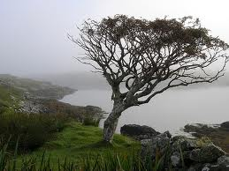

Tree Branches Unlimited
Home Log Rowan Branch Willow Branch

Rowan branches can be very useful. Those who are interested in the supernatural might already know that rowan wood is a very powerful deterant for those who serve the dark. It can also make a very sturdy walking stick for those who like hiking. Finaly, for those who like to make wood carvings, rowan wood has very little knots making it easier to work with. So let's recap the uses: